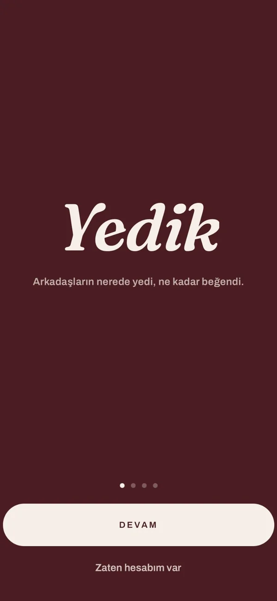
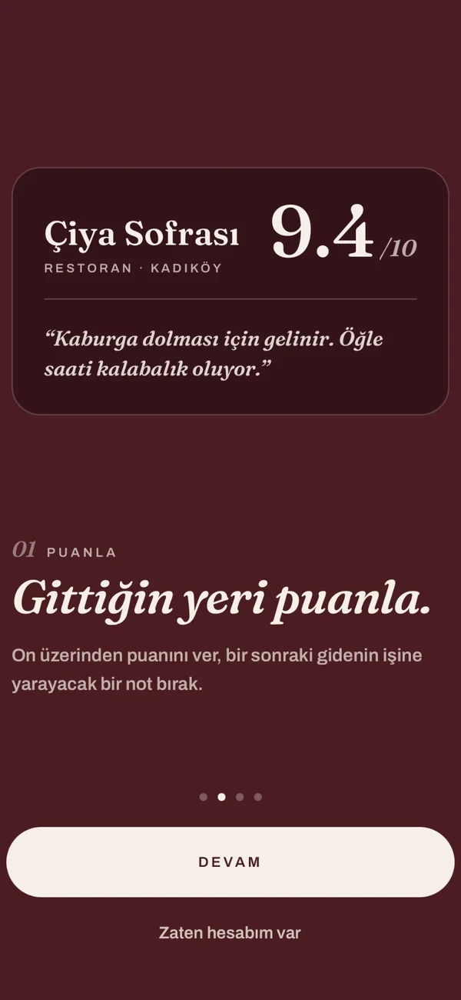

Overview
Yedik started from my own habit of trying new places and always asking friends where they had actually eaten. In the app you rate a place out of ten with a note and a photo, keep two lists — visited, sorted by rating, and want-to-go — and add new spots from a map that already knows 225,000+ Istanbul venues.
Ratings can be shared as story cards, you follow friends and get notified when they post. I designed and built every layer myself, from the database to the App Store listing.
The app




How it works
- AppReact Native + Expo Router client in TypeScript: feed, rating, lists, map, search and share.
- APIGo REST API with chi; type-safe SQL through sqlc and pgx; JWT auth, follow graph and feed.
- DataPostgreSQL 17 with versioned goose migrations; 225k+ venues imported from Foursquare Open Source Places.
- InfrastructureDocker Compose (Postgres + API + Caddy) on a Hetzner server behind Cloudflare; the marketing site ships to Cloudflare Pages.
- CI/CDGitHub Actions on every push: go vet → go test → go build → tsc → jest → docker build → site build.
What’s in the source code
The repository is private while the app is in closed beta. This is how it is organised:
api/Go API —cmd,internal, SQL, migrations, Dockerfilemobile/React Native / Expo Router appapp/Web client built with Vite + TypeScriptweb/Static marketing site generated with pandocdeploy/Docker Compose, Caddyfile, backup and venue-import scriptsstore/App Store listing and screenshots.github/workflows/ci.ymlCI pipeline for API, mobile, Docker image and site
Private repository · closed beta · App Store launch in preparation.